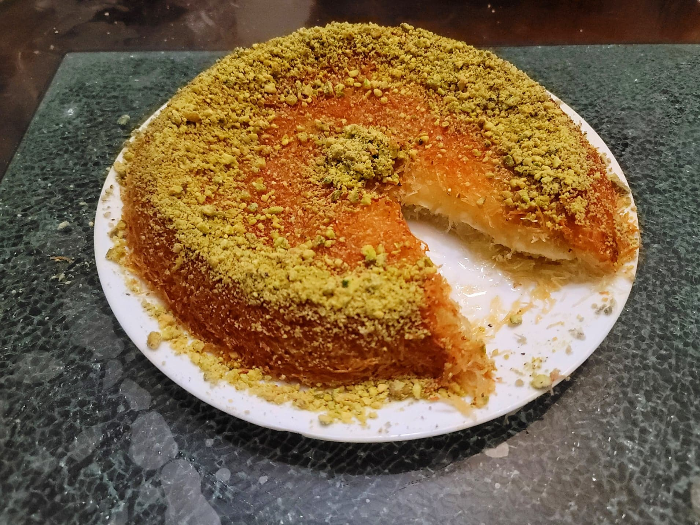

Knafeh/Kunafa

Ingredients:
Simple Syrup:
- 2 cups Water
- 2 cups Sugar
- 1 tbsp Lemon juice
- 1 tsp Rose water
Knafeh/Kunafa:
- 2 tbsp Butter, melted + Optional: Kunafa coloring
- 1 lb Kataifi dough
- 1 cup Butter, melted
- 8 oz Sweet cheese, grated or sliced
- Crushed pistachios, to garnish
Instructions:
- For the simple syrup, add the water and sugar to a saucepan over medium-high heat. Cook until the sugar is dissolved. Then remove from the heat and stir in the lemon juice and rose water. Let cool completely.
- Preheat an oven to 350 degrees Fahrenheit. Grease a 9 inch pie pan with the melted butter with coloring.
- Cut the kataifi dough into small quarter-inch pieces. Then place into a large mixing bowl and toss together with the rest of the melted butter.
- Place half of the kataifi dough into the pie pan and press down firmly to form it into an even layer. Then add the cheese to the center of the kataifi layer, leaving the perimeter with no cheese touching the edges. Then place the rest of the kataifi dough and press down firmly to flatten. Use a spatula or a butter knife to gently tuck in the kataifi on the edges of the pan.
- Transfer to the oven and bake for 40-50 minutes, or until the knafeh is golden and the butter is visibly bubbling up the sides.
- Remove from the oven and let rest for 10-20 minutes. Invert onto a serving plate. Drizzle over half of the prepared simple syrup evenly all over the knafeh. Then garnish with the crushed pistachios.
- Serve hot, warm, or cold, sliced with the remaining simple syrup on the side.